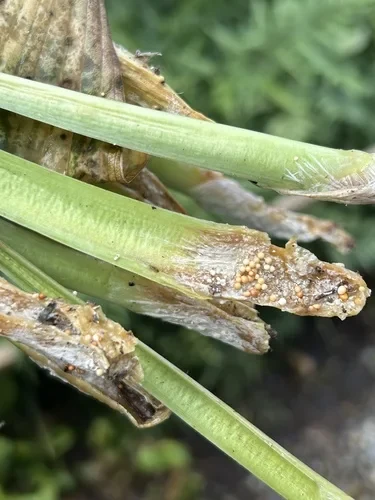

茎变软腐烂
茎变软，有的会出水。只是表面有褐点、茎还硬的，用茎斑那一条。

先看哪里
观察软化是否始于土面，组织是否变暗及凹陷，有没有折伤。
可能原因与下一步
刚出土的幼苗如果在土面处出现水浸状缢缩，可能发生猝倒病。成株茎基变软时，应另外排查根颈腐烂或根腐。仅凭盆土潮湿无法确定原因。
怎样区分相似问题
轻扶枝梢，看土面交界处是否有水浸状、变细的茎段。不要反复捏压，已经变弱的幼苗茎稍一受力就可能折倒。
从茎与盆土交界处往上看，轻挪开掉落的叶子。记住靠下还有哪一段坚实，软斑是仅在一侧，还是已经绕茎一圈。即使叶片仍绿，基部也可能已软到撑不起整根枝。
现在可以做什么
因猝倒病而倒伏的幼苗很少能恢复。移除已倒伏的病苗，避免这一盘的水流入健康育苗盘。下次播种改用洁净容器和新的育苗基质。
内盆泡在套盆的积水里时，把内盆取出沥水，确认排水孔通畅。土面干时内部仍可能很湿，浇前要往下查。保持茎基部可见，别用新土掩埋它来撑住即将倒伏的枝。
接下来观察什么
若好几株幼苗倒伏，查看每株折弯的位置。都在基质表面附近的细窄处倒下，与细长幼苗一起朝窗边倾斜，是两种不同的表现。
若只有一根枝在搬运中挤伤，等表面干后对照原照片。边缘坚实且没有扩大，可以先留着。若邻茎也迅速变软或整株从根颈处倒伏，应尽快鉴定，并避免这盆的排水流进其他盆里。
托盘积水和枝条折伤怎样区分
把仍坚实的相邻枝与软化枝作对照。一次折伤通常从受力点开始；若不止一枝在同一土面高度软倒，则检查盆内根颈、排水孔和套盆积水。不要为了扶直而朝软处培土。复查时看原软斑的外缘和相邻枝基是否仍硬，老软组织不会重新变硬。